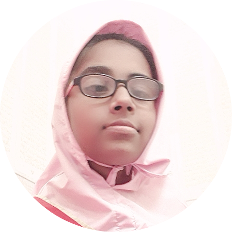

My name is sherebano burhani. I started my hifz at the age of 7 i started memorizing 30 sipara and complete
it. But due to lack of makharij ikhtebaar was pending. After one and half year i give ikhtebaar for
first time but internet did not connect. I applied for second time but got reattempt in ikhtebaar due to tehreek-us-sakin. I attempted for third time doing practizing with husain bs audio and got passed with 93%. This was the starting point of my hifz
journey. Later in around 8 months i gave ikhtebaar of sanaa ula. I started doing hifz furthur in my home. No one was there to
assist me in my hifz. My mom used to listen my jadeed and i do furthur til sipara 12. I gave ikhtebaar of sanaa sani but not clear it.
I again applied but got re-attempt. It lack me a confidene in my hifz and i was thinking to quit it. I quitted my hifz for around 2 months
and after 2 months i started my hifz with new potential my mom helped me lot in my preperation of this ikhtebaar. She mark my mistakes
in quran with pencil and make sure i do not repeat this mistake again. I applied for ikhtebaar and cleared it.
I started doing it furthur and reached till sipara 17. After that we got transfered to sagwara and start my hifz there and give my
ikhtebaar of sanaa salis ad cleared it in just 21 days. In around 5 months i memorized remaining 8 siparas and start preperation for final ikhtebaar it was much difficult to
prepare as i was in class 10 and board exams was running just when i about to complete it. But still due to barakaat of hifz I finished my last page in the month of may and
got good percentage in class 10 boards also. On 31st July i attempt for taqdeem and cleared it. And on 1st August i gave my final ikhtebar to husain bs.
My family was so happy after this. In my whole journey of hifz my mom helped me a lot. Whenever i feel demotivated she motivates me to do so. And with the dua mubarak of
Aqa moula TUS i reached this stage today. May allah grant all of us the potential to do the hifz and fulfill the wish of Aqa moula of one haafiz in each home.
And give our Moula TUS a long and prosperous life!!! Aameen!!